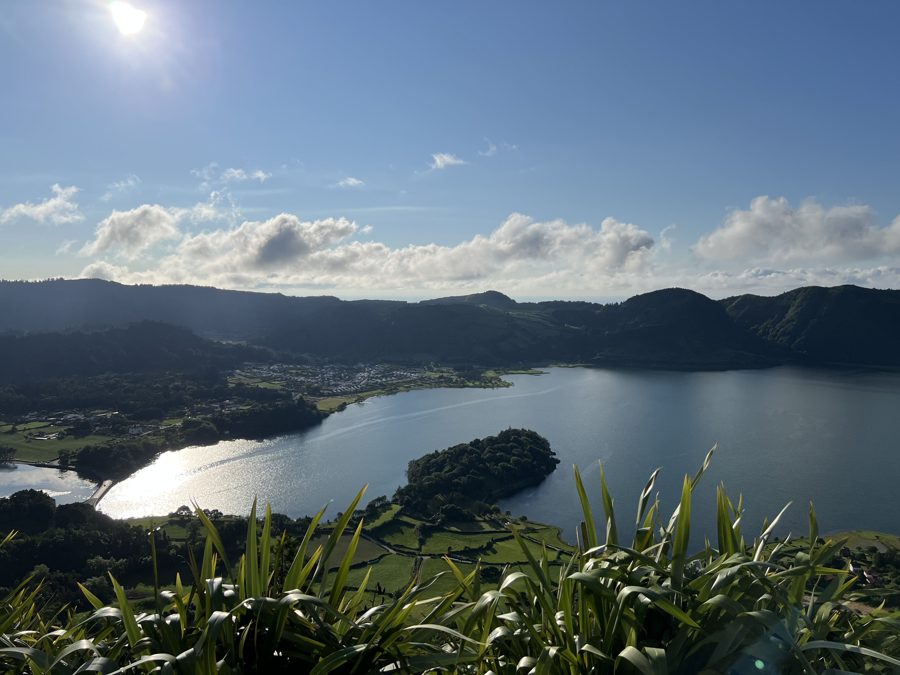
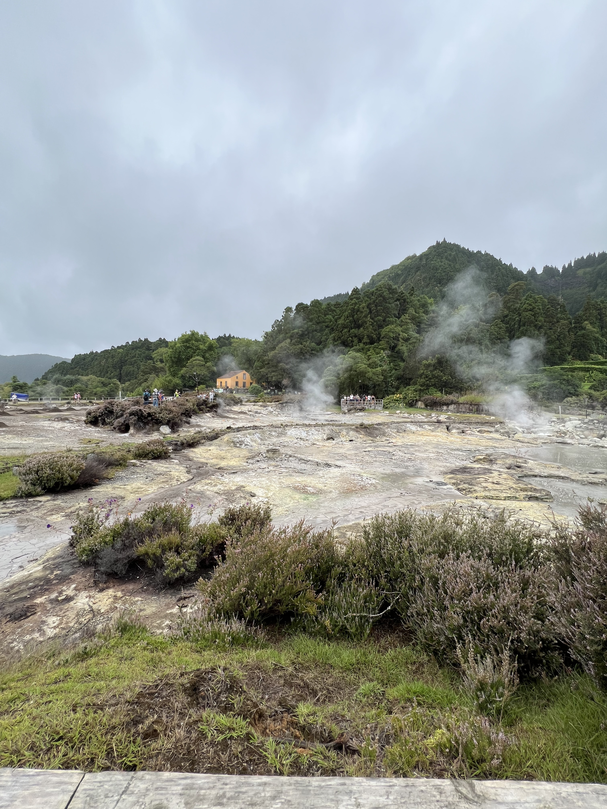
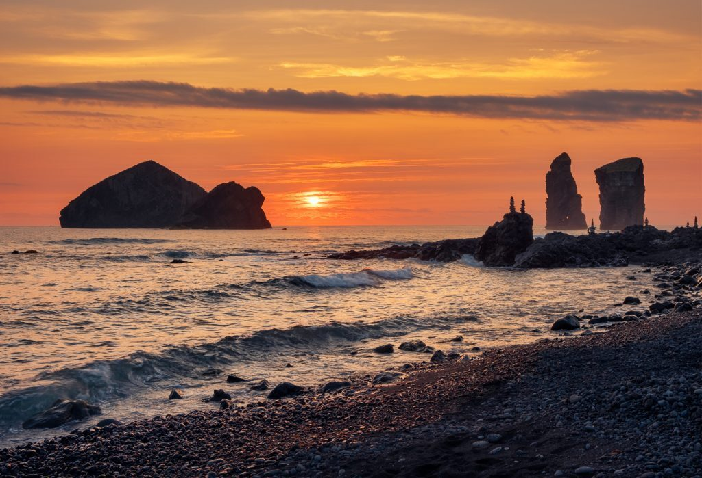
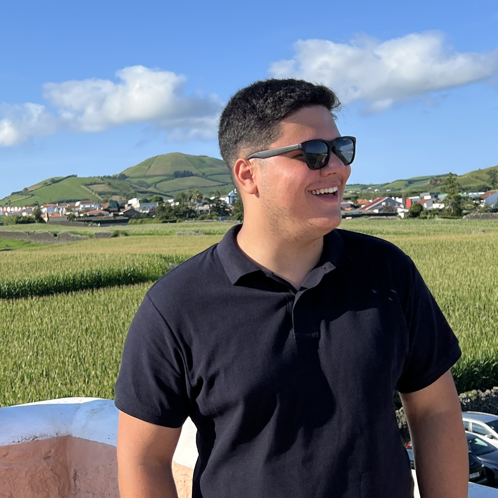

O DNA DE SÃO MIGUEL
Bem-vindo ao portal interativo das Rotas Culturais da ilha de São Miguel. Este site unifica o trabalho dos módulos de Imagem, Som e Vídeo num único produto de hipertexto.
Imagens Locais
Paisagens e locais turísticos capturados em alta definição.
Sons e Música
Música local, podcasts e sons naturais da ilha.
Vídeos
Excertos de vídeos capturados na ilha de São Miguel.
Destaques dos Percursos

Lagoa das Sete Cidades
Explore as lendas, os miradouros e o ecossistema único de uma das maravilhas naturais de Portugal.

Vale das Furnas
Tradições culinárias subterrâneas, caldeiras vulcânicas e os sons marcantes das caldeiras fervendo.

Paisagem dos Mosteiros
Um dos pontos mais emblemáticos da ilha, com praia e piscinas naturais e gastronomia deliciosa.
Biblioteca de fotografias editadas do módulo 2
Selecione qualquer fotografia para ampliar. Esta secção apresenta as imagens editadas para o módulo 2 (de autoria própria e foram otimizadas para web).

Furnas
Fotografia com alto contraste. Otimizada para web (2677KB).

Lagoa do Congro
Fotografia com cor da água alterada. Otimizada para web (1509KB).

Lagoa
Fotografia com alteração de cor e elementos externos. Otimizada para web (3661KB).

Nordeste
Fotografia com alteração de cor e elementos externos. Otimizada para web (5985KB).

Ponta Delgada
Fotografia com elementos externos adicionados. Otimizada para web (4590KB).

Ribeira Grande
Fotografia com alto contraste. Otimizada para web (7986KB).
Biblioteca de fotografias de autoria própria.
Selecione qualquer fotografia para ampliar. Esta secção apresenta as imagens captadas por © Rodrigo Sousa (otimizadas para web).

Parque Urbano
Parque urbano, no centro de Ponta Delgada, ideal para atividades ao ar livre e passeios de família.

Boca da Ribeira
Piscina natural situada na vila de Nordeste e com águas cristalinas.

Praia das Milicias
Praia extensa e maravilhosa na zona de São Roque, em Ponta Delgada.

Lagoa das Sete Cidades
Lagoa de origem vulcânica com águas esverdeadas e paisagens deslumbrantes.

Praia dos Mosteiros
Praia com vista bela situada na freguesia mais ao ocidente de S.Miguel.

Santa Clara
Freguesia junto ao centro de Ponta Delgada com uma costa rochosa extensa e bela vista.
Biblioteca de áudios editados no módulo 3
Reproduzir áudios do Módulo 3
Selecione uma faixa da lista para ouvir...
-
Banda - Faixa de áudio original
Áudio isolado de um vídeo captado, convertido para .mp3. -
Banda - Faixa de áudio editada
Áudio editado para apenas ouvir-se as frequências do tambor e dos pratos. Convertido para o formato AAC. Ajustes de volume e equalização. -
Concerto - Faixa de áudio original
Áudio isolado de um vídeo captado, convertido para .mp3. -
Concerto - Faixa de áudio editada
Áudio editado para apenas ouvir-se as vozes. Ajustes de volume e equalização. -
Compressão - Faixa de áudio em Alta Qualidade
Áudio em alta qualidade, sem nenhuma compressão e em estado original. | Bitrate: 320 kbps | Tamanho: 1,33 MB -
Compressão - Faixa de áudio em Baixa Qualidade
Áudio com compressão significativa, resultando em muita perda de definição e alguma informação. | Bitrate: 32 kbps | Tamanho: 141 KB
Músicas feitas por Açorianos
Reproduzir músicas locais
Selecione uma faixa da lista para ouvir...
-
Sandro G - Rabo de Peixe
Música mais conhecida do rapper Sandro G. Já tem praticamente 23 anos e conta com 2,8M de visualizações. | © Sandro G 2003, NZ Produções, Universal Music Portugal -
Sandro G - Festa
A segunda música mais famosa do rapper Sandro G. Já tem praticamente 16 anos e conta com 1,8M de visualizações. | © Sandro G 2010, NZ Produções, Universal Music Portugal -
Espama Trincana - Hino dos Açores
Música do rapper Açoreano Espama Trincana, que conta com diversos hits e álbuns em alta e tem cerca de 140m ouvintes mensais. | © Espama Trincana 2025, Sony Music Portugal -
Eduardo Mourato - O Mar dos Açores
Música típica dos Emigrantes do Arquipélago dos Açores. Foi lançado há 19 anos e já tem 2,1M de visualizações. | © Eduardo Mourato 2007, Independente -
YÉYÉ - Se quiseres um burro
Música do cantor YÉYÉ. Comicamente conhecida nos Açores. Gravado há 16 anos e conta com 1,1M de visualizações.| © YÉYÉ 2010, Independente
Bandas Filarmónicas dos Açores
Reproduzir atuações das Bandas Filarmónicas
Selecione uma faixa da lista para ouvir...
-
Banda Fundação Brasileira dos Mosteiros
Sediada na freguesia dos Mosteiros, a Banda Fundação Brasileira dos Mosteiros é uma das bandas filarmónicas mais proativas dos Açores. | © Banda Fundação Brasileira dos Mosteiros desde 1863 -
Banda Lira do Norte de Rabo de Peixe
Banda sediada em Rabo de Peixe, na zona norte da ilha, na cidade da Ribeira Grande. | © Banda Lira do Norte de Rabo de Peixe desde 1867 -
Banda Filarmónica Aliança dos Prazeres do Pico da Pedra
Banda sediada em Pico da Pedra, na zona norte da ilha, na cidade da Ribeira Grande. | © Banda Filarmónica Aliança dos Prazeres do Pico da Pedra desde 1958
Produção de Vídeo
Vídeo 1: "Run Boy Run" © Rodrigo Sousa, Imagens e Edição 2026
Criado para o Módulo 4 - Vídeo | Codec H.264 | Formato: .mp4 | Resolução: 4k a 9:16 | Tamanho: 12,9 MB
Vídeo 2: "Bad Bunny" © Francisco Barbosa, Imagens e Edição 2026
Criado para o Módulo 4 - Vídeo | Codec H.264 | Formato: .mp4 | Resolução: 4k a 16:9 | Tamanho: 11,2 MB
Vídeo 3: "Vídeo Final" © Rodrigo Sousa, Edição 2026
Criado para o Módulo 4 - Vídeo | Codec H.264 | Formato: .mp4 | Resolução: 1080p a 16:9 | Tamanho: 15,4 MB
Licenciamento & Ficha Técnica
Clique para expandir a ficha técnica dos projetos
Projeto Módulo 5 - Ficha Técnica
Autor do Projeto: Rodrigo de Jesus Sousa
Curso: CTeSP Desenvolvimento de Aplicações Web (DAW) - Universidade dos Açores
Unidade Curricular: Ferramentas Multimédia | Projeto Final
Módulo: Módulo 5 - Hipertexto
Resumo: Elaborei um website que agrega todo o conteúdo produzido nos módulos anteriores (Imagem, Som e Vídeo).
Seguindo aquilo que foi proposto no tema inicial 'Rotas Culturais de São Miguel', foram referidos diversos locais e paisagens da ilha.
Software utilizado: VS Code (HTML, CSS, JavaScript).
Projeto Módulo 4 - Ficha Técnica
Autores do Projeto: Rodrigo de Jesus Sousa | Francisco Costa Barbosa
Curso: CTeSP Desenvolvimento de Aplicações Web (DAW) - Universidade dos Açores
Unidade Curricular: Ferramentas Multimédia
Módulo: Módulo 4 - Vídeo
Resumo: O grupo elaborou uma conjunção do módulo de Som e de Imagem.
Fizemos uma espécie de documentário a mostrar o que foi feito no próprio módulo 4, módulo 3 e módulo 2.
Softwares utilizados: Adobe Premiere Pro 2025 e Capcut.
Projeto Módulo 3 - Ficha Técnica
Autores do Projeto: Rodrigo de Jesus Sousa | Francisco Costa Barbosa
Curso: CTeSP Desenvolvimento de Aplicações Web (DAW) - Universidade dos Açores
Unidade Curricular: Ferramentas Multimédia
Módulo: Módulo 3 - Som
Resumo: O grupo elaborou uma demonstração do que é possível fazer para manipular uma faixa de som.
Foram feitos ajustes de ganho de volume, equalização, compressão e isolamento de frequências de som.
Seguindo aquilo que foi proposto no tema inicial 'Rotas Culturais de São Miguel', foram utilizados excertos de som gravados na própria ilha.
Softwares utilizados: Adobe Audition 2025, FL Studio e Audacity.
Projeto Módulo 2 - Ficha Técnica
Autores do Projeto: Rodrigo de Jesus Sousa | Henrique Pacheco Trindade | Francisco Costa Barbosa
Curso: CTeSP Desenvolvimento de Aplicações Web (DAW) - Universidade dos Açores
Unidade Curricular: Ferramentas Multimédia
Módulo: Módulo 2 - Imagem
Resumo: O grupo criou um logótipo em svg e editou imagens incluindo elementos externos.
Foram feitos ajustes de cor, iluminação, recorte de objetos e adição de elementos externos.
Seguindo aquilo que foi proposto no tema inicial 'Rotas Culturais de São Miguel', foram utilizadas fotografias da própria ilha.
Softwares utilizados: Adobe Photoshop 2025 e GIMP.
Direitos de Autor e Licenciamento
Projeto de Imagem:
• Usado o elemento Banner de avião do autor PixelSquid360 para "pdl.jpg" (Licença gratuita para uso escolar).
• Usado o elemento Carro do site PNG Wing para "nordeste.jpg" (Licença gratuita).
• Usado o elemento Nuvens do site PNG Wing para "lagoa.jpg" (Licença gratuita).
• Todas as imagens utilizadas são de autoria própria dos elementos do grupo.
Projeto de Som:
• Usado o elemento Transition-Base do autor Trading_Nation para "intro.mp3".
• "Loucos" © Matias Damásio, Arca Velha Entretenimento, Lda. 2015 - foi usada para fins académicos e sem fins lucrativos.
• A atuação da banda filarmónica do Norte não está protegida por direitos de autor.
Projeto de Vídeo:
• Usados os elementos Podcast-Music do autor NastelBorn e "intro.mp3" (créditos já mencionados) para o vídeo final.
• "LA MuDANZA" © BadBunny, Álbum Debí Tirar Más Fotos, The Orchard Enterprises 2025 - utilizada para fins académicos e sem fins lucrativos.
• "Run Boy Run" © WOODKID, Álbum The Golden Age, PIAS France, Polydor / Island Records (Universal Music Group) 2013 - foi utilizada para fins académicos e sem fins lucrativos.
Projeto de Hipertexto:
• Música - Rabo de Peixe | © Sandro G 2003, NZ Produções, Universal Music Portugal.
• Música - Festa | © Sandro G 2010, NZ Produções, Universal Music Portugal.
• Música - Hino dos Açores | © Espama Trincana 2025, Sony Music Portugal.
• Música - Mar dos Açores | © Eduardo Mourato 2007, Independente.
• Música - Burro | © YEYE 2010, Independente.
• Banda - © Banda Fundação Brasileira, Mosteiros desde 1863.
• Banda - © Banda Lira do Norte, Rabo de Peixe desde 1867.
• Banda - © Banda Filarmónica Aliança dos Prazeres, Pico da Pedra desde 1958.
• Recursos de terceiros: Ícones via FontAwesome (OFL/MIT).
Privacidade e Conformidade RGPD
Este site web não recolhe, armazena ou processa dados pessoais de visitantes. Este site funciona como um "portefólio" para apresentar os trabalhos académicos. Todos os intervenientes cujos rostos ou vozes surgem nos conteúdos multimédia, são 100% digitais criados com o auxílio de IA.
Declaração de Transparência sobre IA
Em conformidade com as regras de transparência da União Europeia e do enunciado do projeto:
- Código HTML/CSS/JS: Algumas correções de sintaxe do código e a otimização de acessibilidade e responsividade foi feita com apoio da ferramenta AI Claude.
Sobre mim
Bem-vindo à minha biografia!
Chamo-me Rodrigo Sousa, tenho 20 anos e sou estudante do primeiro ano do CTeSP DAW na Universidade dos Açores.
Este site apresenta, em conjunto, os meus trabalhos académicos na Unidade Curricular Ferramentas Multimédia.
Tal como a maioria dos programadores, comecei a programar na escola com um simples "Hello, World!" em C++.
Foi a partir daqui que comecei a explorar um pouco do mundo da programação.
LinkedIn
GitHub
